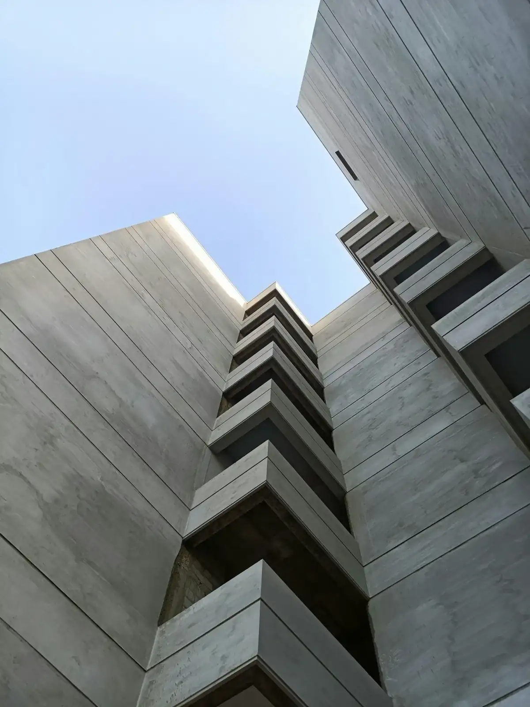
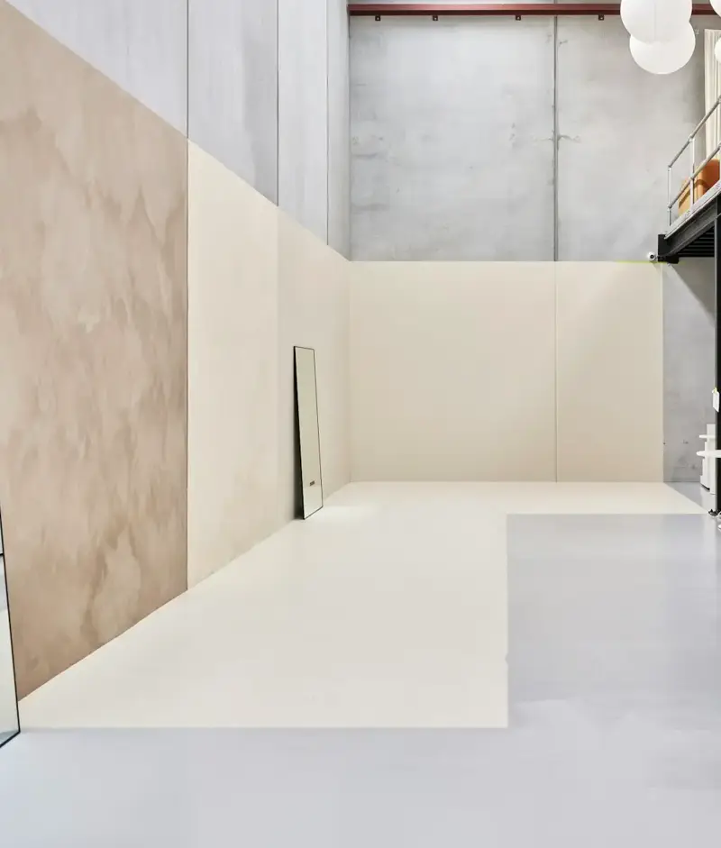
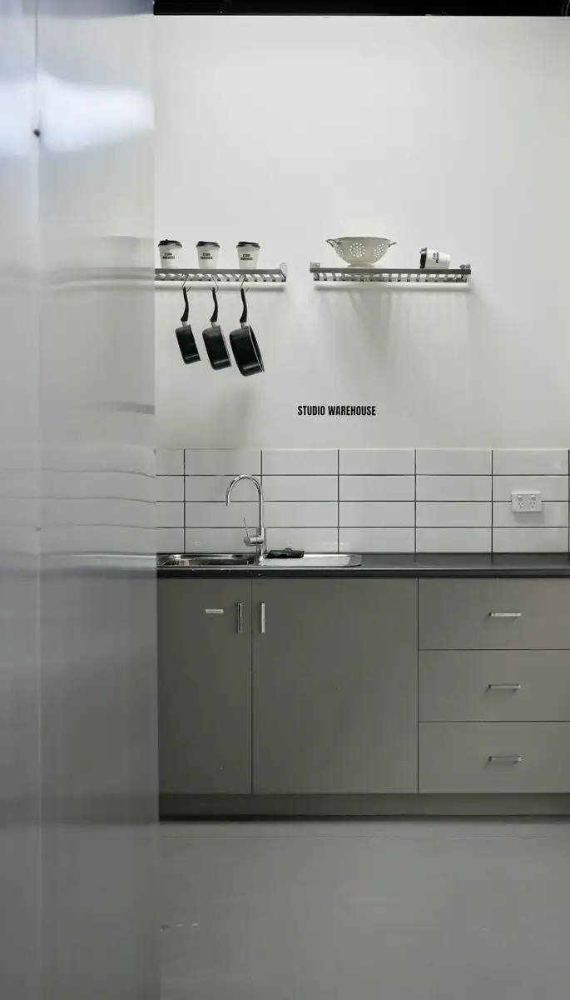
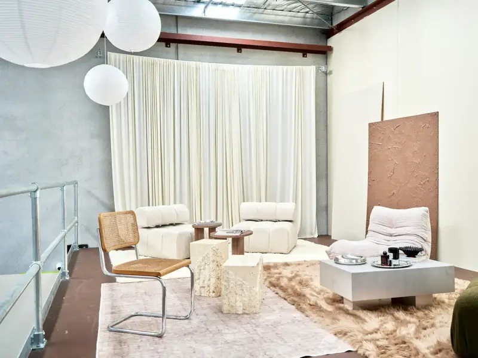
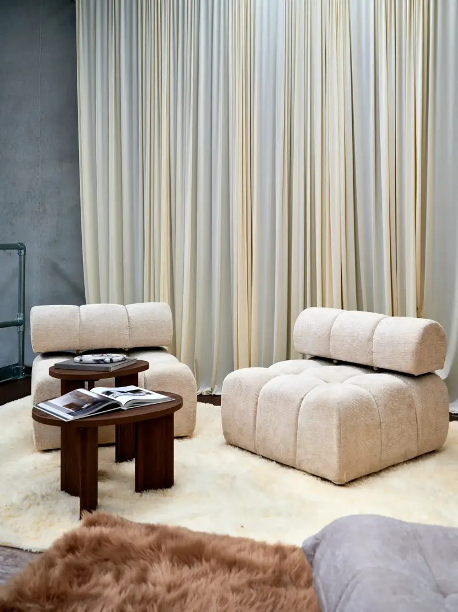

Empreendimentos / Atelier 85
Atelier 85

Pronto para morar
Sessenta e quatro unidades em concreto aparente na Rua dos Ofícios, no Centro Histórico. O térreo é aberto para a calçada, com cafés e ateliês de bairro.
Empreendimento fictício
Agendar uma visita
O que o prédio oferece
Térreo ativo
Seis lojas pequenas com fachada para a rua e aluguel subsidiado para comércio local.

Oficina comum
Bancadas, ferramentas e armários para quem precisa de espaço de trabalho fora do apartamento.
Bicicletário
Uma vaga por unidade e estação de reparo no subsolo.

Lavanderia
Máquinas compartilhadas no 1º andar, liberando área dentro dos estúdios.
Terraço-horta
Canteiros coletivos e um pergolado para encontros no fim da tarde.
Interiores de um galpão de concreto real, usados como referência: Foto: Neon Wang / Unsplash
Três tamanhos
Compare as tipologias. Áreas e quantidades são demonstrativas.
| Estúdio | Loft | Duplex | |
|---|---|---|---|
| Área privativa | 38 m² | 64 m² | 112 m² |
| Pé-direito | 2,80 m | 5,20 m | 2,80 m por pavimento |
| Dormitórios | Integrado | 1 no mezanino | 2 suítes |
| Varanda | Não | Sim, 6 m² | Sim, 14 m² |
| Unidades | 32 | 24 | 8 |
| Disponíveis | 3 | 5 | 1 |
A pé, em até dez minutos
Distâncias estimadas em um bairro fictício.
- Praça principal
- 2 min
- Mercado Central
- 4 min
- Estação de metrô Ofícios
- 6 min
- Biblioteca municipal
- 7 min
- Parque linear do rio
- 10 min
